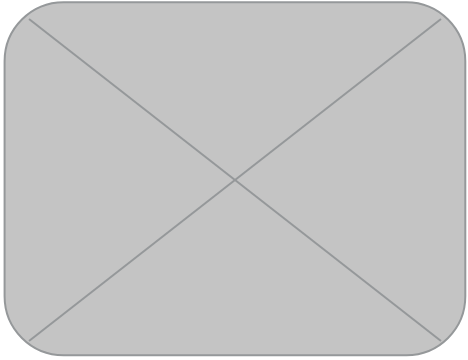

CMU Professional Development Serives: Competency Assessment
Team
- Madeline Duque
- Jennifer Han
- James Ormond
Opportunity
Professional Development Services has identified an opportunity for CMU staff and faculty to better utilize the database full of resources to facilitate employee competency growth. CMU staff and faculty who wish to develop their competencies can currently access this database through FocusU. Professional Development Services wants to give staff and faculty the ability to build a career plan, where users can develop a path and execute the plan in order to grow.
Outcomes
There were two main outcomes of the project: a better understanding of the necessary solution for the client, and a developed web application. The first major accomplishment in the project was working with the Professional Development Services staff to build a deep understanding of the proposed solution. Discussions with the client resulted in the proposal of a web application where 1) faculty and staff could assess their competency levels and gain access to appropriate resources and 2) Professional Development Services administrators could manage the content in the system. The technological outcome of the project was the development of the proposed web application prototype. The combination of these two accomplishments resulted in a more efficient method for distributing the Professional Development Services’ resources to faculty and staff in the university community.
Deliverables
The deliverables for this project is a database-driven web application, with a content-management system for the administrators and a competency self-assessment for general users. The client can give the code base to the next team of developers with all of the existing code for the application. Another component of the deliverables of this project is thorough documentation given to the client. The documentation will provide the client with the opportunity to build upon this project in future phases.